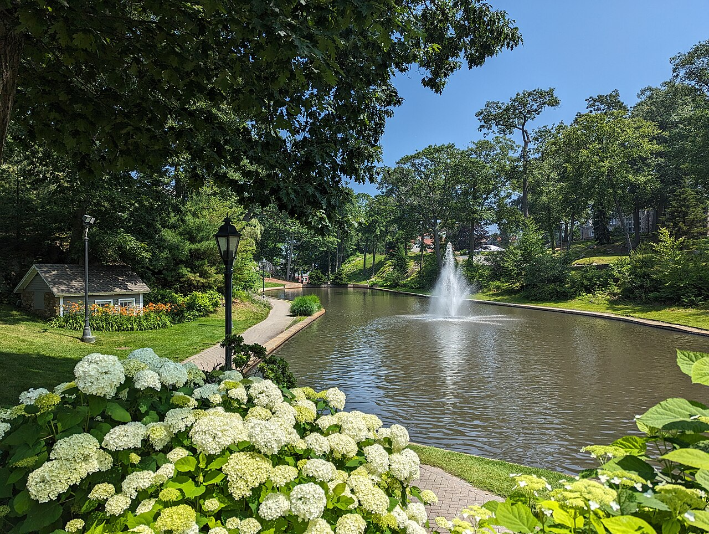
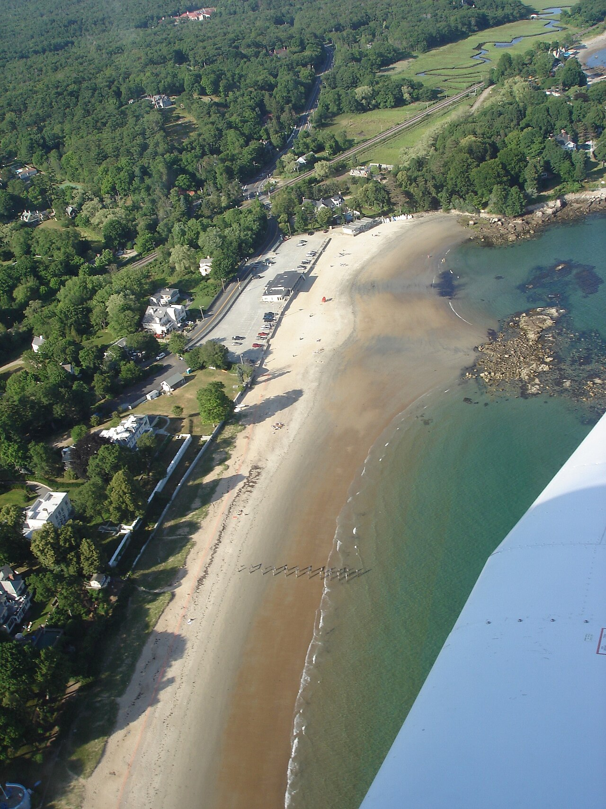

9/25 PLAN A 朋友開車北上
STAY Meco + 9/26 + 9/27 已訂
WEDDING 9/27 · Tupper Manor
DEPARTURE 9/28 Train 173 · 11:40
BOSTON · POCKET FIELD GUIDE
Freedom Trail， 同一條紅線上，同時有殖民、抗爭、奴隸制度與公民權。把它當成「誰有資格談自由」的長篇辯論，Boston 會比課本複雜得多。
9/26 · Morning 01
Boston Common：城市一直在這裡表態 1634 年設立的 Common 不只以「美國最老公園」聞名。它當過牧場、民兵操練場、英軍營地、刑場，也一直是公共集會與抗議的舞台；從廢奴演說到 civil rights 與反戰群眾，都曾站在這片草地上。
現場找什麼 不要只把 Frog Pond 當風景：想像公共空間曾同時容納放牧、懲罰、軍事與休閒。 走到 Park Street 一帶時留意地勢；城市最早的公共生活就是從這塊不完美的共享土地開始。 問自己：一塊由所有人使用的地，是否也真的一直屬於所有人？ City of Boston · Common history ↗ 9/26 · Morning 02
Beacon Hill：紅磚有兩個版本 南坡的聯邦式宅邸、煤氣燈與 Louisburg Square 形塑了今日明信片；但北坡與西坡過去住著勞工、中產與自由黑人社群，也是廢奴運動和 Underground Railroad 的重要節點。漂亮的 Acorn Street 只是這座山丘的一面。
現場找什麼 比較 South Slope 與往北的街廓、尺度和建物氣質，不要只追最乾淨的一條巷子。 經過 Joy Street 一帶時，記得 19 世紀的 Black Beacon Hill 曾在此建立教會、學校與互助網絡。 紅磚保存得很完整，但居民與權力的故事並不整齊。 NPS · Beacon Hill history ↗ 9/26 · Midday 03
Old State House：權力被群眾包圍 1713 年的 Old State House 曾是英國殖民政府中心；James Otis 在裡面挑戰 writs of assistance，Boston Massacre 則發生在門外。1776 年 7 月 18 日，《獨立宣言》又從東側陽台第一次向 Boston 民眾宣讀。同一棟樓，先代表王權，後來又成了革命舞台。
現場找什麼 先看屋頂的 lion 與 unicorn：它們直接標示英國王室權威。 走到東側陽台下方，地面圓形鵝卵石記號標出 Boston Massacre 的位置。 抬頭看被高樓包圍的小建築；權力中心後來被城市尺度吞沒，反而更有戲劇性。 NPS · Old State House ↗ 9/26 · Midday 04
Faneuil Hall：自由言論也有矛盾 樓上的 Great Hall 從 1742 年起就是公共辯論空間，後來迎來 Frederick Douglass、Lucy Stone 等人的聲音，至今仍舉行入籍典禮。但捐建者 Peter Faneuil 的財富與奴隸貿易有關；「Cradle of Liberty」這個稱號，因此也應該帶著不舒服一起理解。
現場找什麼 市場喧鬧之上另有 Great Hall；別把 Quincy Market 的食物街當成全部。 想像 abolition、women’s suffrage 與勞工議題在此被公開辯論。 把建築的自由象徵與資助者的財富來源並置，而不是硬選一個版本。 NPS · Faneuil Hall context ↗ 26 SEP
DAY 08 · BOSTON IN ONE TAKE
不是走完整條 Freedom Trail；是把故事走懂。 唯一完整 Boston 日，從綠地、山丘、革命史一路走到義大利街區與港邊。
Boston Common Beacon Hill Old State House Faneuil Hall North End Harborwalk
MORNING Common → Public Garden → Beacon Hill 先用公園和紅磚街道調整步速；Acorn Street 只短停，不為一張照片排隊太久。
MIDDAY Freedom Trail 精選段 State House、Old South Meeting House、Old State House、Faneuil Hall 串成一條，室內只挑最想看的進。
EVENING North End → Harborwalk 晚餐、甜點、港邊黃昏三選二；隔天是婚禮，不把今晚走成耐力賽。
27 SEP
DAY 09 · THE ONLY-ONCE DAY
今天不觀光。今天進入朋友的人生。 Tupper Manor 與 Beverly 海岸就是完整主題；所有額外景點都只是有空才看的前奏。
The venue Sea air 
Campus 
North Shore 慢早餐 整理服裝 Beverly Tupper Manor 9/27 住宿
MORNING 睡飽、熨衣、確認交通 衣服、鞋、禮物、行動電源一次處理；不要把需要回住宿拿東西的風險留到出發前。
BEFORE CEREMONY 只做順路的 Beverly 海岸或校園散步擇一。到場時間依邀請函，反推交通再多留 30 分鐘。
WEDDING NIGHT 相機放下來一點 真正值得記住的是人，不是素材量。晚間直接回已訂住宿，不跨城。
NON-NEGOTIABLE 婚禮細節以邀請函與新人訊息為準。
WEATHER 海岸風大；薄外套不只為下雨。
NEXT DAY 今晚睡前確認 9/28 送站時間。
28 SEP
DAY 10 · THE LONG RAIL DAY
從 South Station 一路坐到朋友家旁邊。 不再是便車南下。Train 173 已開票，終點 30th Street 又正好貼近 Philadelphia 住宿。
Goodbye Boston 17:29 arrival Philadelphia ahead Tomorrow 朋友送站 South Station 11:10 Train 173 · 11:40 30th Street 17:29 朋友家
11:10 前抵達 Boston South Station Train 173 · 11:40 → 17:29；六小時車程準備水、午餐、薄外套與離線娛樂。
MORNING 不排 Boston 最後一站 慢早餐、退房、拿行李；朋友送站已是今天最重要的銜接。
ON BOARD 把火車當恢復日 婚禮隔天最適合長程移動。貴重物隨身，離座時手機與護照不要留桌上。
PHILADELPHIA 到站後幾乎不用跨城 朋友家就在 30th Street 一帶；公開網頁不放門牌。今晚吃飯、聊天，不偷跑明天景點。